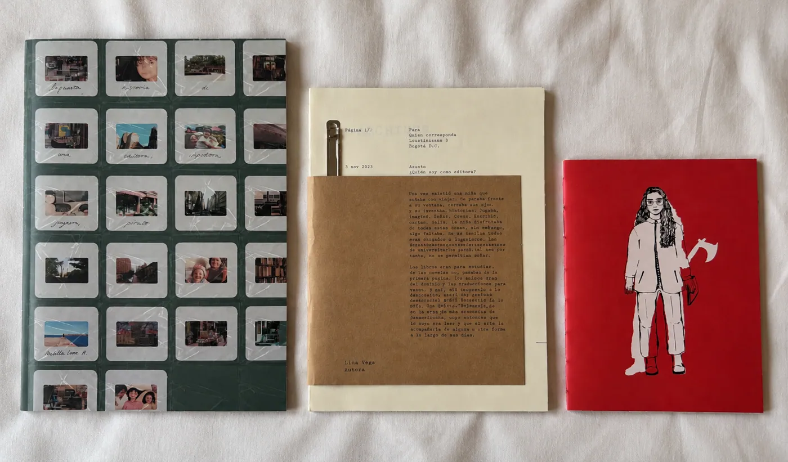
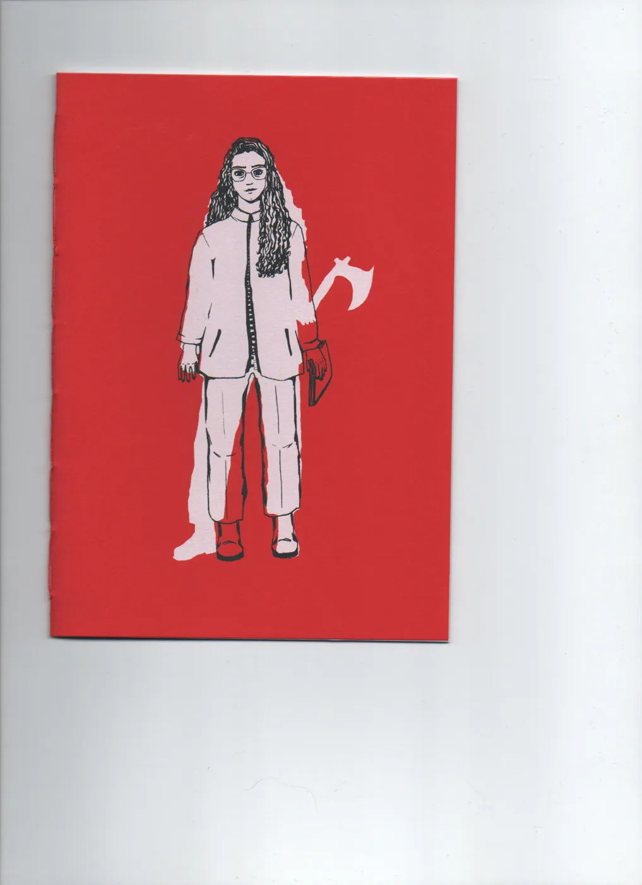
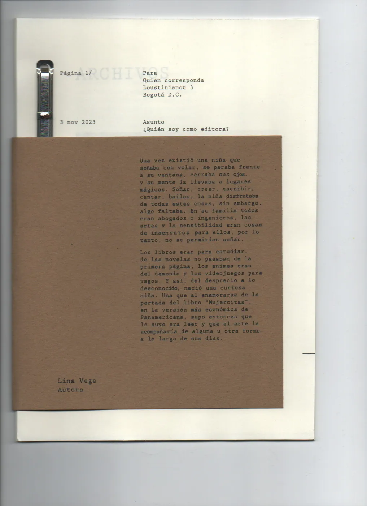
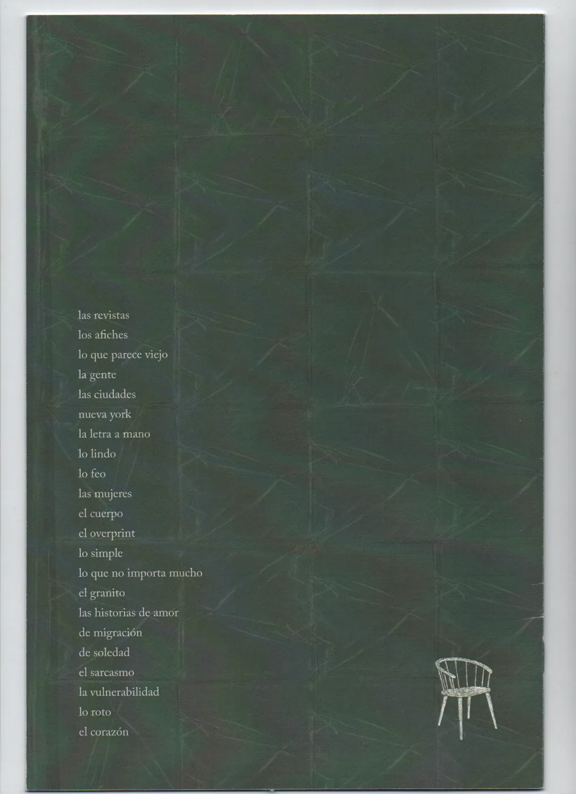
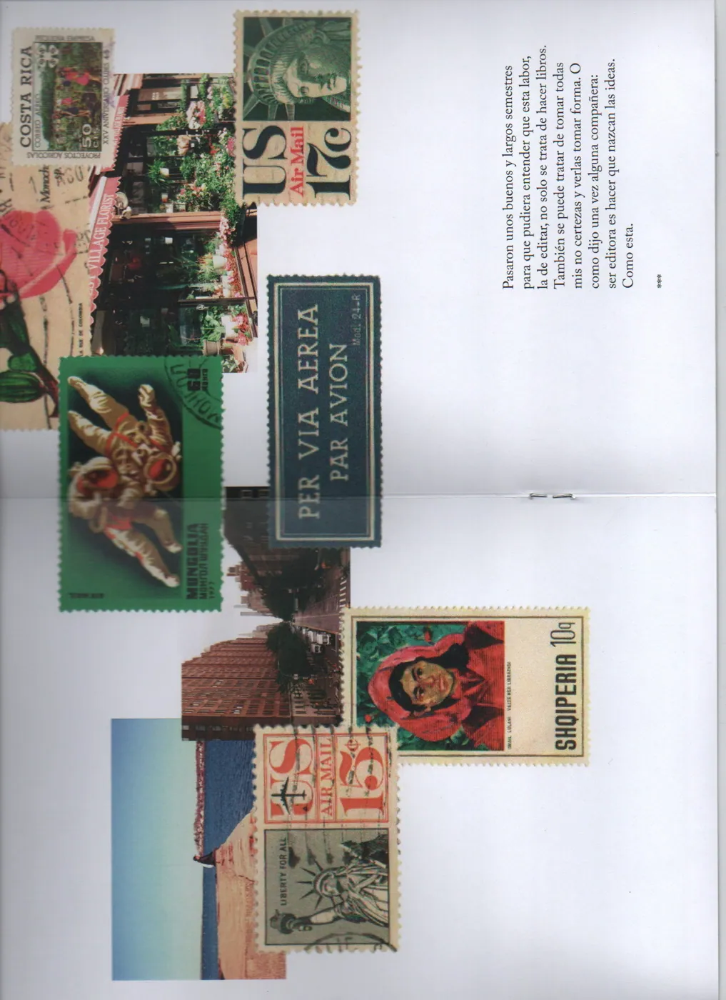
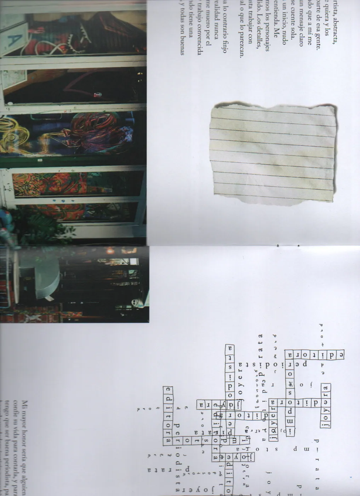
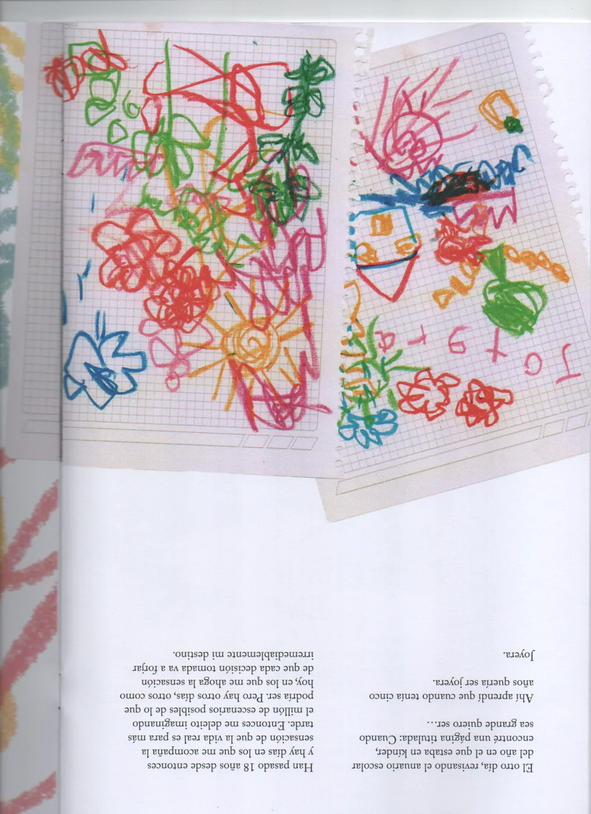
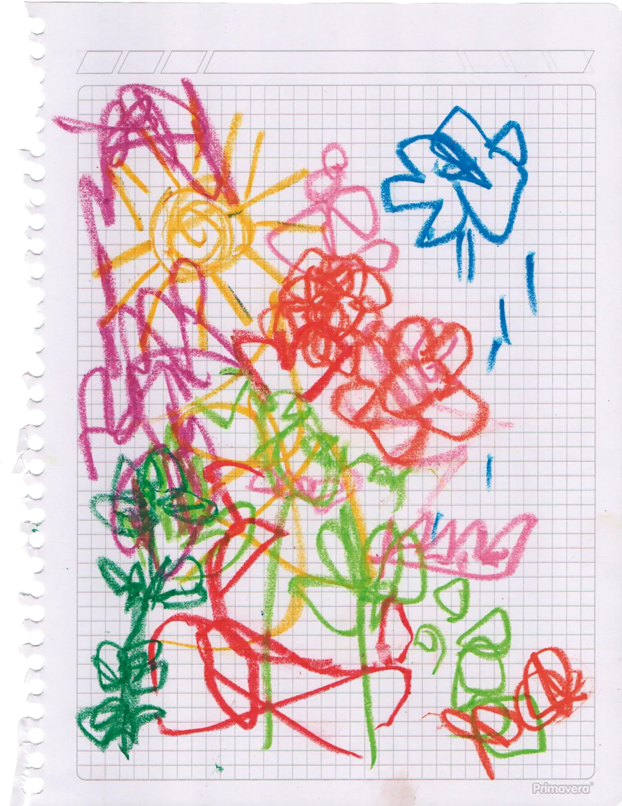
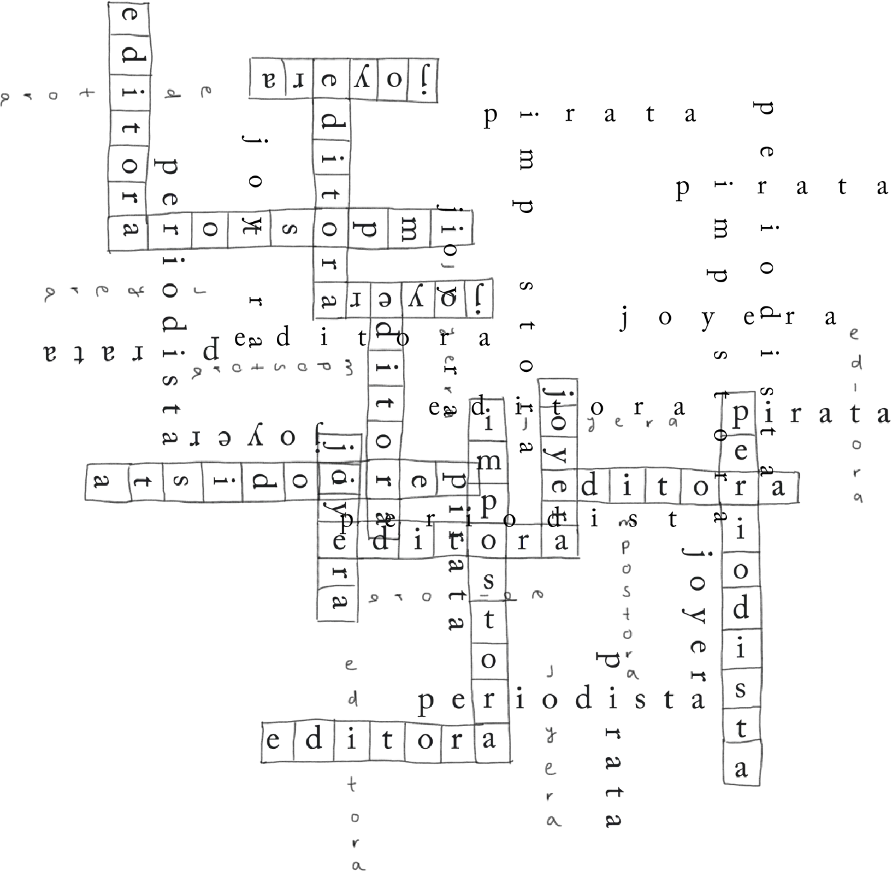

proyecto
Ocupar espacio
Tres publicaciones que exploran el formato y los materiales: diapositivas, collage, crucigramas, papel kraft y dibujo. Cada una ocupa el espacio a su manera. (Texto provisional)
La primera publicación es un archivo de diapositivas: fotografías familiares montadas sobre tela verde, con anotaciones a mano. Se lee a contraluz. (Texto provisional)




Un espacio es también una hoja, una caja, una pared.




Dibujos, crucigramas y textos mecanografiados se imprimieron sobre papeles distintos; el libro cambia de textura al pasar la página. (Texto provisional)
